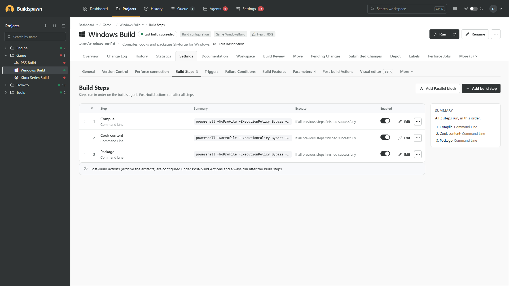

Build Steps
The list of steps a build runs, in order. This page explains how the tab works. Each kind of step has its own page in the Build steps section.
When to use it
Use it to add, order, switch off and override steps. Steps run from top to bottom. Steps that a project or a template passes down run first.

How to set it up
- Open the build configuration and click Settings. Then click Build Steps.
- Click Add build step, pick a runner such as Command Line or Unreal Engine, and fill in its fields.
- Drag the handle on the left of a row to change the order.
- Use the Enabled switch to skip a step without losing its settings.
- The changes on this tab are saved when you finish a step.
Every field
| Field | What it does | Default | Example |
|---|---|---|---|
| Name | What the step is called in the list and in the log. | Runner name | Cook content |
| Runner | The kind of step: Command Line, PowerShell, Unity, Unreal Engine, MSBuild and more. See Runners. | - | Unreal Engine |
| Summary | A short line of what the step runs. | - | - |
| When it runs | The execution rule of the step: only when earlier steps passed, always, and so on. See Common step fields. | Only if all previous steps succeeded | Always run |
| Enabled | Switch a step off to skip it. It stays saved. | On | On |
| Add Parallel block | Steps that run side by side. See Parallel blocks. | - | - |
| Edit and the … menu | Open a step. The menu copies, moves or deletes it. | - | - |
| Override / Disable in this job / Reset | On an inherited step: change it here only, switch it off here only, or go back to what the project or template gives. | - | - |
A worked example
Windows Build has three steps: Sync and clean (Perforce operations), Cook content (Unreal Engine) and Package (PowerShell). The project Game passes down a first step that prints the build number. It shows with a chip Game; the studio disables it on the Linux server build only.
What you see when it runs
The build page lists each step with its result. The console log shows one block per step. A step that is switched off shows as skipped.
Problems and fixes
| Problem | What to do |
|---|---|
| I cannot edit a step | It is inherited. Use Override, or edit it on the project or template it comes from. |
| A step shows Disabled above | It was switched off on a project higher up. Change it there. |
| A Pipeline shows read-only steps | A Pipeline keeps its steps in the script. See Pipeline. |